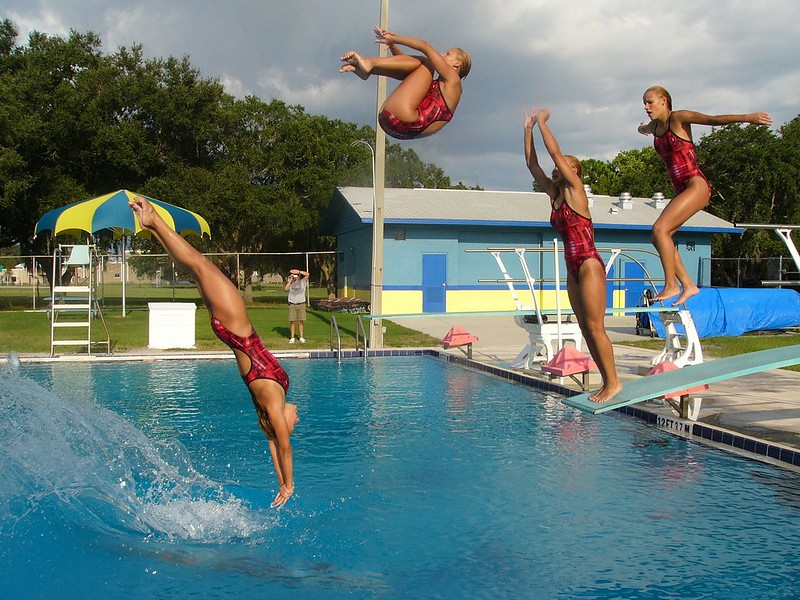

I am using a Casio EX-F1 still bridge camera that can take up to 60 images at varying frame rates between one and 60 frames per second.
The above image was taken with an older camera that can take images at up to 5 fps (frames per second) maximum only. The individual shots are not as close together as with the other photos due to the slower frame rate.